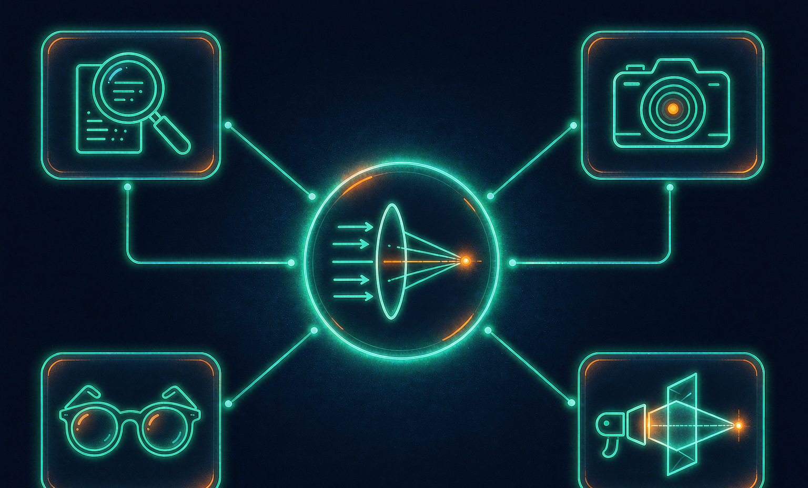
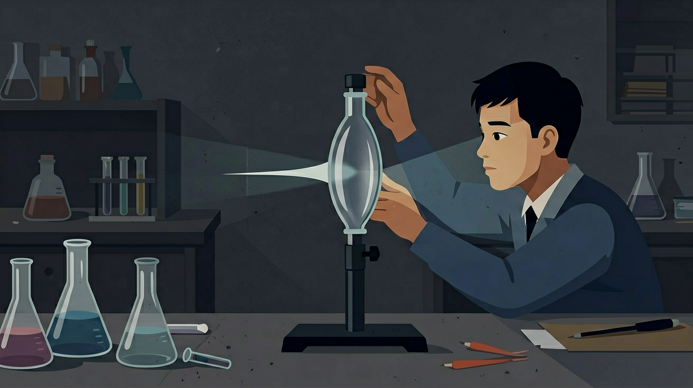
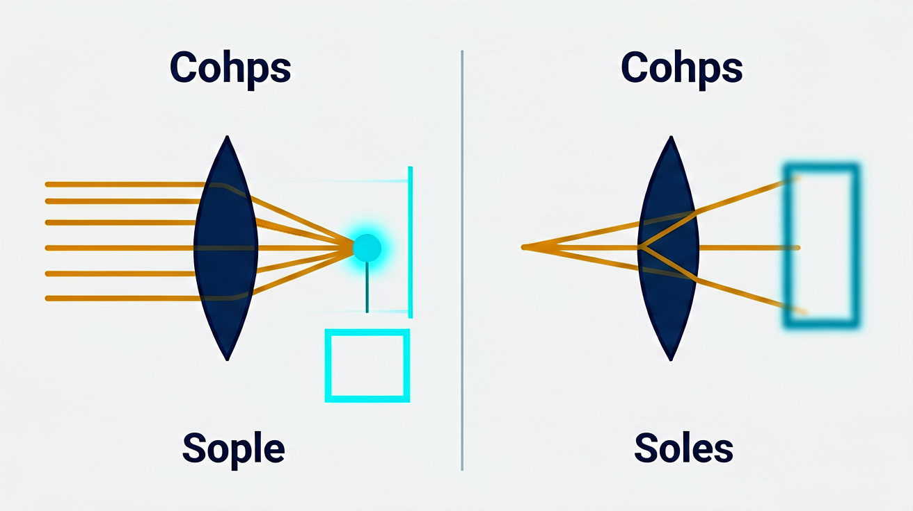

🎯 能说出凸透镜和凹透镜对光线的作用区别
🎯 能判断给定透镜类型并绘制典型光路图
🎯 能分析物体位置变化对成像大小和虚实的影响
❓ 为什么近视眼镜是凹透镜，而老花镜是凸透镜？
❓ 为什么用放大镜点火时，离纸太近反而烧不起来？
❓ 为什么凸透镜既能放大又能缩小像？
学完这一课，这些问题你都能自信地回答。
And：学生见过放大镜和近视眼镜
But：不清楚为什么有的镜片聚光有的散光
Therefore：建立透镜分类与光路变化的直接关联
凸透镜中间厚边缘薄，能把平行光会聚到焦点，如焦距10cm的透镜使阳光在纸上烧出黑点时就是焦点位置；凹透镜中间薄边缘厚，会让平行光发散，像近视镜片那样。关键区别在于光线经过透镜后是向中间靠拢还是向外扩散。
🌍 老花镜用凸透镜聚光帮助阅读，汽车后视镜用凹透镜扩大视野。下雨天车窗上的水滴相当于微型凸透镜，能看到倒立的景物。
平行光通过哪种透镜后可能点燃纸张？
凸透镜会聚、凹透镜发散；注意焦点、焦距与成像规律。
对光现象有生活经验。
记混反射/折射规律；虚实像不分。
建立透镜模型并会判断。
❓ 为什么近视眼镜是凹透镜，而老花镜是凸透镜？
❓ 为什么用放大镜点火时，离纸太近反而烧不起来？
❓ 为什么凸透镜既能放大又能缩小像？
学完这一课，这些问题你都能自信地回答。
🎯 能说出凸透镜和凹透镜对光线的作用区别
🎯 能判断给定透镜类型并绘制典型光路图
🎯 能分析物体位置变化对成像大小和虚实的影响
光从一种物质进入另一种物质（比如从空气进入玻璃），传播速度会改变，方向也会跟着偏折——这个现象叫折射。折射有两条规律：
① 从空气斜着进入玻璃：速度变慢，方向向法线靠拢。
② 从玻璃斜着回到空气：速度变快，方向偏离法线。
一块凸透镜可以近似看成上下两个三棱镜底面相对拼在一起：
凹透镜正好相反，相当于两个三棱镜尖角相对拼在一起，平行光进来后分别向上、向下向外偏折，看起来像是"从焦点散开"的，其实是反向延长线才交于一点——所以叫虚焦点。
💡 一句话记住：凸透镜中间厚边缘薄 → 光向主光轴偏折 → 会聚；凹透镜中间薄边缘厚 → 光向外偏折 → 发散。
凸透镜会聚、凹透镜发散；注意焦点、焦距与成像规律…
抓住角度/成像关键量
联系生活与实验

And：学生见过放大镜和近视眼镜
But：不清楚为什么有的镜片聚光有的散光
Therefore：建立透镜分类与光路变化的直接关联
凸透镜中间厚边缘薄，能把平行光会聚到焦点，如焦距10cm的透镜使阳光在纸上烧出黑点时就是焦点位置；凹透镜中间薄边缘厚，会让平行光发散，像近视镜片那样。关键区别在于光线经过透镜后是向中间靠拢还是向外扩散。
🌍 老花镜用凸透镜聚光帮助阅读，汽车后视镜用凹透镜扩大视野。下雨天车窗上的水滴相当于微型凸透镜，能看到倒立的景物。
平行光通过哪种透镜后可能点燃纸张？
凸透镜对光有会聚作用，凹透镜对光有发散作用。凸透镜成像规律：u＞2f 成倒立缩小实像，u=2f 成倒立等大实像，f＜u＜2f 成倒立放大实像，u＜f 成正立放大虚像。一倍焦距分虚实，二倍焦距分大小。
想知道凸透镜把物体成的像在哪、多大、正倒、虚实，不用死记——只要会画三条特殊光线中的任意两条，一画就知道。
光线 ① 过光心的光线：穿过透镜中心，方向不变，直线穿过。
光线 ② 平行于主光轴的光线：折射后经过焦点。
光线 ③ 经过焦点的光线：折射后平行于主光轴。
💡 口诀：过心不变、平行过焦、过焦平行。
试着用这三条光线画一画：物距大于 2 倍焦距、介于一二倍焦距之间、小于一倍焦距，三种情况的像分别在哪里？
And：知道凸透镜能聚光
But：不理解焦点位置如何确定
Therefore：用实验量化焦距与成像的关系
焦点是平行光会聚的点，焦距(f)是透镜中心到焦点的距离。实验方法：保持凸透镜和光屏不动，移动蜡烛直到光屏出现清晰火焰像时，物距(u)、像距(v)与焦距满足1/u+1/v=1/f。例如f=15cm的透镜，当u=30cm时v也会是30cm。
🌍 投影仪调节镜头到屏幕的距离就是在找最佳像距，电影院放映机焦距调试不当会出现模糊画面。
某透镜使太阳光在距其20cm处形成光斑，其焦距是？
把蜡烛、凸透镜、光屏依次放在光具座上，三者中心大致在同一高度：
💡 做之前先猜一猜：蜡烛从远处逐渐靠近透镜时，你觉得像是变大还是变小？记下你的猜想，做完对照——多数人会猜错。
And：观察过放大镜成放大像
But：不知道成像大小与位置的关系
Therefore：总结物距-像距-像特性的定量规律
当物体在凸透镜2倍焦距外(u>2f)，成倒立缩小实像（如照相机）；在1-2倍焦距间(f<u<2f)，成倒立放大实像（如投影仪）；在1倍焦距内(u<f)，成正立放大虚像（如放大镜）。例如f=10cm的透镜，物体放在25cm处时会在16.7cm处形成缩小实像。
🌍 手机镜头拍近物时要自动后退，就是在调整物距使u略大于f，获得清晰放大像。
用f=5cm的凸透镜观察蚂蚁，要看到放大虚像应把蚂蚁放在距透镜？

| 物距 u | 像距 v | 正倒 | 大小 | 虚实 | 典型应用 |
|---|---|---|---|---|---|
| u > 2f | f < v < 2f | 倒立 | 缩小 | 实像 | 照相机 |
| u = 2f | v = 2f | 倒立 | 等大 | 实像 | 测焦距 |
| f < u < 2f | v > 2f | 倒立 | 放大 | 实像 | 投影仪/幻灯机 |
| u = f | 不成像 | — | — | — | 探照灯/手电 |
| u < f | — | 正立 | 放大 | 虚像 | 放大镜 |
💡 口诀：一倍焦距分虚实，二倍焦距分大小；物远像近像变小，物近像远像变大。
And：能单独改变物距或焦距
But：不会系统分析多变量影响
Therefore：建立透镜成像的完整变量关系图式
透镜成像有四个可测变量：物距u、像距v、焦距f、像高h'。改变任一变量会影响其他：①f不变时，u减小→v增大→h'增大；②u不变时，f增大→v增大→h'增大。实验设计：固定f=8cm，测u从12cm变到6cm时v从24cm变到12cm，像从2cm高变成4cm高。
🌍 相机变焦镜头实质是改变透镜组等效焦距，同时自动调整像距保持清晰。
保持物距不变，将凸透镜从f=10cm换成f=15cm，像会？
💡 按提示调节角度/透镜，观察光路变化。
外链：https://phet.colorado.edu/sims/html/geometric-optics/latest/geometric-optics_zh_CN.html
📷 照相机：要拍下远处的大风景、缩成胶片/传感器上的小像 → 用缩小倒立实像（u>2f）。镜头里就是一块凸透镜，调焦距改变清晰范围。
📽 投影仪/幻灯机：要把小胶片/小芯片上的内容投成大画面 → 用放大倒立实像（f<u<2f）。所以你看到的画面是倒立的，装片时要把内容倒着放。
🔍 放大镜：贴着物体看（u<f），成正立放大虚像——拿得离纸远一点，字会显得更大，但超过焦距就模糊了。
👓 眼镜：近视眼晶状体太凸、成像在视网膜前 → 用凹透镜发散让像点后移；老花眼成像在视网膜后 → 用凸透镜会聚让像点前移。
计算像距可用 1/u + 1/v = 1/f。判断像的性质先把物距与 f、2f 比较，再确定倒正、放缩与虚实，最后才算数值。
常见误区：常见误区是把“物距小于焦距成虚像”与“物距大于二倍焦距成缩小像”记混，判断顺序颠倒。
凸透镜成正立放大虚像的条件是？
凸透镜焦距 10 cm，物距 15 cm 时像距为？
透镜的学习重点是
虚像的特点是
（中考题）物体距凸透镜20cm时成倒立放大像，该透镜焦距可能是？
用透镜观察窗外景物，发现像倒立缩小，此时物距与像距关系是？
（迁移题）水下摄影时发现成像模糊，应如何调节镜头？
✅ 凹透镜只能形成正立缩小的虚像
💡 混淆两种透镜成像本质区别
✅ 建立物距-像距-像性质动态关系表
💡 未掌握成像公式的定量分析
勾选你已掌握的条目。
口诀：凸聚凹散记分明，厚薄中间定类型
类比：凸透镜像漏斗聚水，凹透镜像伞面散雨
研究光现象时常用
光学实验应注意
解释生活光现象应
用三句话说明透镜最重要的一条规律，并举一例。
复述本课两个核心概念的定义。
用本课方法分析一个新例子。
有同学认为：认为凹透镜也能形成实像 —— 请说明错在哪里。
有同学认为：忽略物距变化对像性质的影响 —— 请说明错在哪里。